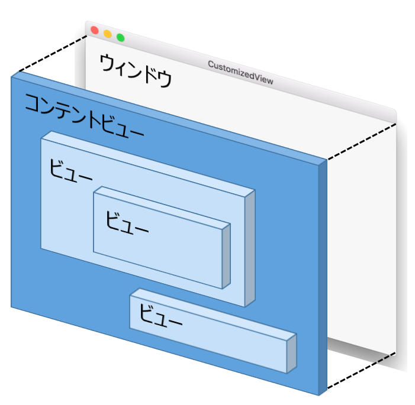
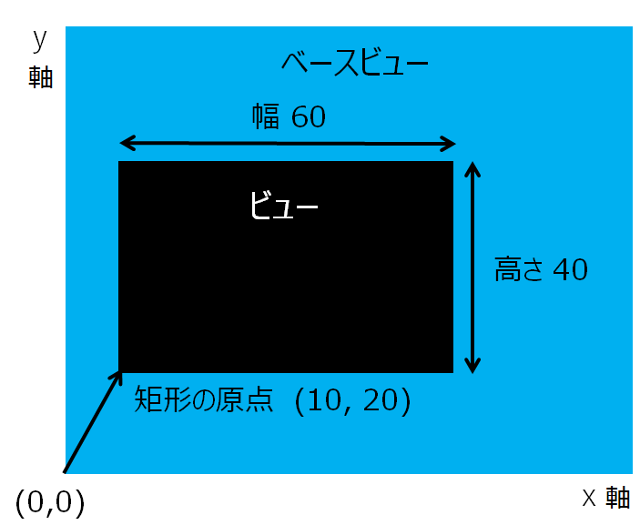
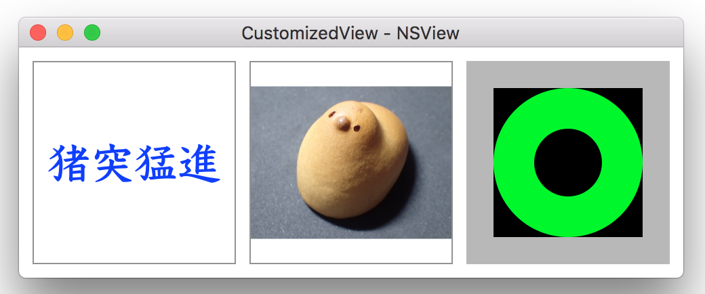
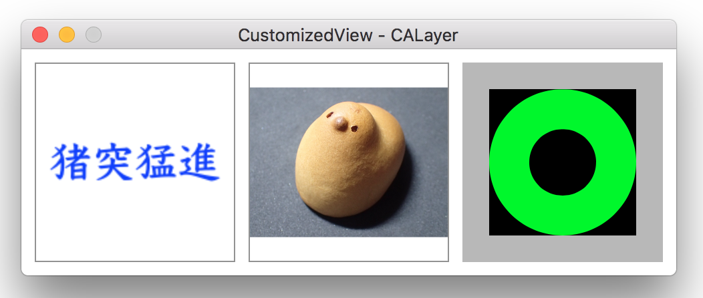
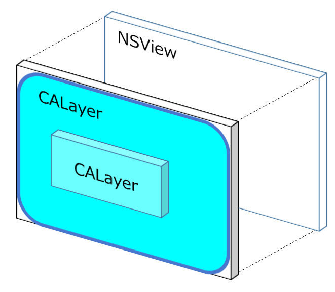
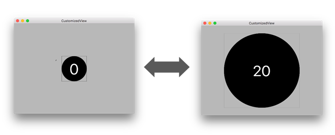

ビューに文字列/イメージ/図形を描く
ウィンドウの要素であるボタン、テキストフィールド、テーブルビュー、コンボボックス、イメージを表示するカスタムビューなどは、すべてNSViewクラスをのサブクラスである。NSViewクラスのサブクラスを新たに作成することによって、アプリケーション独自のビューを作成することができる。
カスタマイズしたビューには、文字列（NSString, NSAtributedstring）、イメージ（NSImage）、図形（NSBezierPath, NSLayer, CoreGraphics）を表示できる。また、ビューの背景色や枠線の形状、色を変えることができる。
ビューの基礎
ビューは矩形である。
ビューは階層構造である。基底となるビューはウィンドウと同じ大きさのコンテントビューで、その上にビューが重なっていく。

ビューのframeプロパティは、ビューの位置と大きさを持つ。ビューの位置は、ベースとなるビューの原点からビューの原点までの距離の座標（x, y）となる。なおビューの座標系の原点はデフォルトの設定では左下となる。ビューのザイズは、幅（width）と高さ（height）をピクセル単位で表す。
下の例でいえば、ビューの矩形の原点は（10, 20）、サイズは、60 x 40 となる。

drawRectメソッドでビューに描画する

ビューの描画で一番重要なメソッドは、NSViewクラスのdrawRectメソッドである。ビューに何らかのコンテンツを描画するときは、カスタムクラスを作成して、このメソッドをオーバーライドする。
引数のNSRect構造体には、ビューの領域情報（矩形の原点と大きさ）が渡ってくる。この矩形の範囲の中で描画を行う。
ビューに文字列やイメージを描画するときに、drawRectメソッドの中で、drawdrawAtPoint または drawInRectメソッドを実行する。
属性付き文字列を表示する（左側のビュー）
drawdrawAtPointメソッドは、文字列オブジェクトをビューの中央に表示する。メソッドの引数に、文字列の矩形領域の原点を指定する。原点は、ビューの大きさと文字列の矩形の大きさから計算する。
イメージを表示する（中央のビュー）
drawInRectメソッドにより、イメージをビューの中央に表示する。メソッドの引数に、イメージを表示する矩形領域のサイズと位置（NSRect構造体）を指定する。表示する矩形領域のサイズは、元のイメージのサイズと縦横の比率は同じにする。
図形を表示する（右側のビュー）
NSBezierPathクラスにより、背景色、円を描画する。Convenience Functionによりビューの枠線を描画する。
サブクラスの初期化
以上の例は、NSViewクラスのサブクラスのオブジェクトを作成・初期化し、ベースとなるビュー（例えばコンテントビュー）に追加するという方法をとる。
サブクラスのイニシャライザ
Inteface Builderでビューオブジェクトを作成し、ビューのクラスにサブクラスを指定した場合、オブジェクトの初期化は awakeFromNibメソッドの中で行う必要がある。
ビューの再描画のタイミング
drawRectメソッドは、ビューのプロパティを変更したときなど、ビューの再描画が必要になるたびに自動的に呼ばれる。アプリケーションが直接呼び出してはならない。ただしアプリケーションが表示コンテンツを変更するなどして強制的に再描画させたいときは、ビューの needsDisplayプロパティを更新する。
ソースコード
アプリケーション制御
AopDelegate
属性付き文字列を表示する
View1
イメージを表示する
View2
図形を表示する
View3
CALayer にコンテンツを描画する

ビューは、自身に対応するレイヤー（CALayerオブジェクト）を持つ。Core Animationフレームワークの一部であるCALayerクラスは、豊富な二次元グラフィック機能を提供する。レイヤーに対する描画によって、ビューに対する描画と同じことを行うことができる。

レイヤーに画像を表示するには、CALayerクラスのオブジェクトを作成し、表示コンテンツをプロパティに代入する。イニシャライザ等の初期処理でCALayerオブジェクトを自身のレイヤに一度だけ追加すればよい。
Core Animationフレームワークを利用するには次の宣言ファイルをインポートすること。
属性付き文字列を表示する（左側のビュー）
CALayerクラスのサブクラスのCATextLayerクラスを使用する。stringプロパティに属性付き文字列を代入する。※文字の輪郭がぼやける気がする
イメージを表示する（中央のビュー）
CALayerクラスのcontentsプロパティにNSImageオブジェクトを代入する。ただし、OS10.5以前であれば、CGImageRefを代入すること。
ビューにイメージを描画するには、CoreGraphicsを使用することもできる。豊富な機能を利用してイメージの拡大・縮小・移動、切り取りやカラー調整といった操作をすることができる。
画像当てクイズ（初歩のCore Graphics）で取り上げた。
図形を表示する（右側のビュー）
図形を作成するには、CALayerクラスのサブクラスのCAShapeLayerクラスを使用し、pathプロパティにNSBezierPathオブジェクトを代入する。
ビューの背景色や枠線（太さ、色、丸み）は、レイヤーのプロパティの設定により変更することができる。
ビューの中に図形を描画する方法は、ビューをデザインする でも取り上げた。
ソースコード
アプリケーション制御
AppDelegate
属性付き文字列を表示する
View4
イメージを表示する
View5
図形を表示する
View6
ビューの座標系を変換する
MacOSXのビューの座標系（左図）は左下が原点となる。Windows等他の多くのシステムの座標系（右図）のように原点をビューの左上にするには、
NSViewクラスのサブクラスで、isFlippedメソッドをオーバーライドする。
ビューに対するイベントを補足する
ボタンオブジェクトと同じようにビューの中でマウスをクリックしたときに特定のメソッドを起動してみる。
ビューに対するマウスイベント（mouseUpなど）やキーボードイベント（keyDownなど）の実装を行えばよい。
NSViewのサブクラスを作成し、丸いボタンをデザインする。ボタンをクリックするとカウンタが増え、shitキー押しながらクリックすると減る。ビューのタイトルにカウンタ値を表示し、円の大きさはカウンタの値に合わせて変化する。

ソースコード
AppDelegate
アプリケーション制御
CustomizedView
ボタンビュー